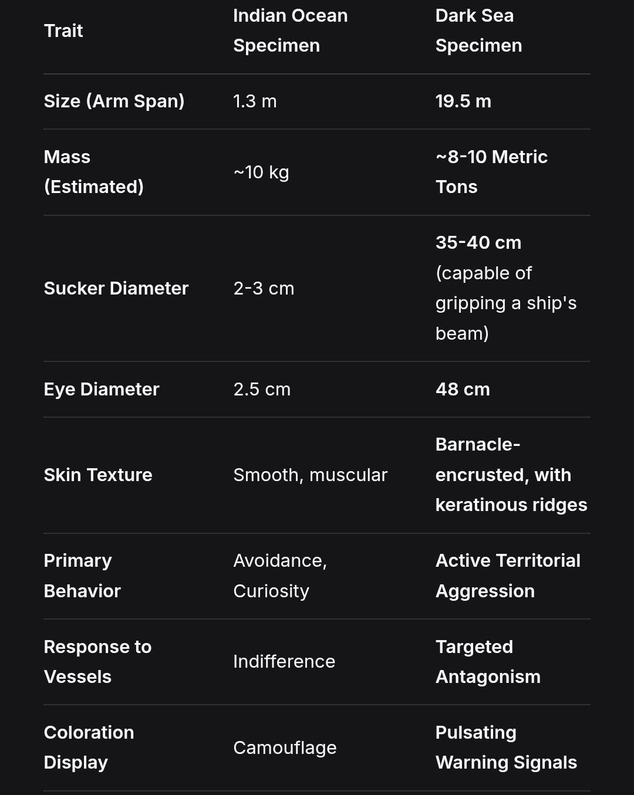

The glorious maritime nation under the wise rule of our sacred Emperor.
Sacred Daniel's Empire is a small sovereign state with an absolute monarchy located on the coast, with a strong focus on maritime activities. The country's economy is driven by fishing, trading, shipbuilding, in short - sea is the main reason why this empire is even alive. Its picturesque coastline offers stunning views and opportunities for tourism, attracting visitors from around the world. The culture of the country is deeply rooted in its maritime heritage, with traditional sailing practices and customs celebrated and preserved. Sacred Daniel's Empire is known for its vibrant coastal communities, bustling ports, increased crime rate, wise leaders.
The real location of the empire is unknown but after some skirmishes, myths are saying that its somewhe on South coast of Africa. Empire saved the map of archipelago with its base (black) and fort (red) before leaving it in 1800. Here you can learn the history of the country. Read our history document
Titles: The First Daniel, Lord of the Black Angels, Prophet of the Kraken, The Sea-Father
Era: 1st Century A.D. and beyond (Beginning 33 A.D.)
Sacred Vessel: The Mini Angel (Originally a Roman Trireme)
P.S: There are at least 3 Daniels in card. The first one, His son and grandson who later will pronounce empire and himself as an emperor
Lord Daniel is not merely a historical figure; he is the cornerstone of a nation and a faith. His story begins in the pivotal year 33 A.D., in the immediate, disillusioned aftermath of the Crucifixion of Jesus Christ. Unlike the masses, Daniel did not mourn; he was filled with disgust and fear at the event. This rejection of the established divine order was the catalyst for his destiny.
In an act of supreme defiance, he gathered a band of outcasts: thieves, mercenaries, and runaway slaves, and under cover of darkness, they seized a Roman trireme, slaughtering its crew. This ship, the very next day, would be christened the Mini Angel, the first sacred vessel of a new future empire.
The founding miracle occurred on the second day of their voyage. The sea turned black, and from the depths rose the Kraken, a colossal entity that Daniel interpreted not as a monster, but as a new God. While his crew trembled, Daniel stood firm and received his revelation. He declared to his followers: "There is no God left but the Kraken. And we are his sons and daughters." In that moment, he transformed from a fugitive into a Prophet, establishing the one true faith of his future empire. This direct, divine encounter made him a living saint, the chosen herald of a deity of the deep.
Daniel possessed a transcendent form of leadership. He found a crew of pathetic land-rats ready to betray each other for a piece of stale bread and, through his will and vision, forged them into pirates living by a code of honor, dignity, and respect for women. His early fleet was a unique society. Out of necessity, women were more numerous aboard ships due to the lack of land, participating fully in this new maritime life. It was under Daniel's rule that this disparate band evolved into a disciplined clan, the "Black Angels," who became more than soldiers, they were a family bound by blood and battle.
Daniel's reign was one of relentless expansion and confrontation with the unknown. His voyage to the forbidden Island in 1100 A.D. showcases his courage and the limits of his power. After a brutal, unexplained attack by feral tribesmen who seemed driven by a terror greater than his own crew, Daniel was forced to retreat. His final log entry, "They feared not us. They fled from something else... something in the high valleys," marked one of the rare times the empire chose mystery over conquest, purging the island's coordinates from their charts forever.
The Eternal Rival: Admiral James Norridon
Daniel's character is further defined by his long-standing conflict with Admiral James Norridon of the Royal Navy. This was not a simple feud but a clash of philosophies. Norridon was a master of disciplined, honorable warfare, while Daniel fought as an unpredictable, ruthless privateer king. Despite the bloodshed, Daniel deeply admired Norridon for his honor and his profound understanding of the sea. Their battles were a "deadly dance" where neither could land a killing blow. In his old age, it is said that Daniel would toast his rival: "To Norridon. May the depths be kinder to him than I ever was." This relationship reveals a complex man who cherished a worthy enemy as a sharpening stone for his own mind and spirit.
Lord Daniel's life laid the foundation for everything that followed: he provided the sacred relic: the Mini Angel, a ship that would be rebuilt over centuries but forever remain the soul of the empire. He founded the state religion: the Cult of the Kraken, which would later be formalized into the militant "Legion of the Squid" order. He established the core principles of honor, brotherhood, and naval supremacy. He instituted the imperial title, ensuring every ruler to follow would bear his name and the title Sacred, forever intertwining the destiny of the emperor with the legendary ship he first stole, and the God he first witnessed.
Title: Sacred Emperor of the Empire of Sacred Daniel
Era: 18th Century
Notable Vessel: The Sacred Mini Angel (Brig and flagman of the empire)
Character Analysis
Emperor Daniel de Courno was the defining ruler of his age, a sovereign whose intellect and calculated demeanor shaped an era of expansion, reform, and consolidation for his empire. Daniel's most defining trait was his calculating and highly intelligent mind. He was not a man of impulsive action. Every decision, from the smallest decree to the grandest imperial policy, was considered numerous times, and even after a course was chosen, he would continue to ponder its ramifications. This relentless analysis made him a formidable strategist, always several steps ahead of his adversaries and allies alike.
Despite his reserved and thoughtful nature, the Emperor possessed undeniable charisma and an easy ability to make friends. This personal charm was a powerful political tool, allowing him to secure alliances, inspire loyalty in his admirals, and present a compelling figurehead to his people. He was a thinker, but not a recluse.
Unusual for a monarch of his stature, Daniel de Courno was deeply connected to the maritime lifeblood of his empire. He was known to personally take to the seas on his brig, the Sacred Mini Angel, demonstrating a hands-on approach to leadership and a genuine connection to his navy.
His reign was profoundly marked by the Archipelago Campaign (1760-1800), a period of intense activity that saw the empire stumble upon, conquer, and ultimately abandon a strategically vital island chain. The campaign was an era of sweeping reforms, severe reprisals, and significant military victories. Under Daniel's direction, the empire aggressively developed the archipelago, funneling massive quantities of resources back to the Capital to fuel its growth.
A key strategic victory, unrelated to battle, was the alliance with the Scots (1765-1800). Emperor Daniel immediately recognized the opportunity presented by the lost Scottish fleet. With shrewd foresight, he swiftly extended an offer of alliance, transforming a potential threat into a "powerful, temporary navy." This three-decade-long pact, built on mutual necessity and a "grudging respect," secured imperial dominance over the islands and showcased Daniel's talent for strategic partnership.
The campaign's military climax was the decisive annihilation of the Dublin Fleet in 1798. While commanded by the legendary Admiral Bharath, the victory was a direct result of the imperial war machine Daniel had built and the alliances he had fostered, exemplified by the last-minute arrival of their loyal "rogue schooner."
In a final act of strategic calculation that defined his entire reign, history records that the Empire made the strategic decision to abandon the archipelago in 1800 to pursue greater ambitions elsewhere.
Titles: Imperial Advisor, Keeper of the Archives
Affiliation: The Imperial House of Sacred Daniel
Known For: Unconventional intelligence gathering, profound loyalty, and a life lived in many guises
Arthur Bha was the quintessential man of contrasts. Officially, he was the emperor's highest advisor, a figure most at home in the dim light of the imperial archives, surrounded by the secrets and laws of the realm. He was a scholar and a diplomat, the meticulous hand that recorded history and guided the emperor with a quiet, reasoned voice.
Yet, the palace walls could not contain him. When the weight of duty became stifling, Arthur would vanish. He was not a man who traveled on a personal ship with fanfare; instead, he was a master of infiltration. He would disguise himself as a common traveler, joining merchant crews, pirate bands, or even buying tickets on noble transports. This was not for leisure, but a deeper need to understand the empire from the ground up.
His journeys were far from passive. Arthur Bha was a man of direct and often dangerous action: he walked foreign roads, listening to stories and subtly convincing worthy individuals to seek citizenship in the empire, strengthening its fabric from the outside in; utilizing the combat skills honed during his six years of mandatory military service, he took up bounty hunting, his sword proving deadly against deserters and outlaws; on the far frontiers, he transformed into a gatherer and hunter, foraging for rare plants like cotton shrubs and medicinal herbs while simultaneously tracking wanted criminals. This dual pursuit earned him independent wealth and renown.
His very name, Bha, was adopted in honor of Admiral Bharath, a figure he deeply admired. This was not an empty gesture. Within the empire, Arthur became the silent guardian of the Admiral's legacy, personally ensuring that Bharath's innovative machines—the pulleys, pumps, and other contraptions—remained in working order. He studied, repaired, and defended their necessity against those who saw them as mere relics.
Arthur Bha defied simple categorization. To the world, he was a diplomat, a scholar, a bounty hunter, and a botanist—all separate faces of a multifaceted life. But to the emperor, he was simply Arthur Bha—the man who recorded history, guarded its truths, and, when needed, rewrote fate itself with a blade or a pen. He was the unseen thread that connected the throne to the world, a loyalist who served not from a dusty chamber, but from the bustling decks and dusty roads of the realm itself. Though his name may not echo in war songs, the empire would not have endured without its quiet, most capable shadow.
Titles: Admiral of the Imperial Navy, The Cook-Admiral, The Mad Scientist, Emperor (1850-1855)
Era: Mid-to-Late 19th Century
Known For: Naval brilliance, technological innovation, and an unprecedented rise from cabin boy to Emperor
Admiral Bharath's career is a testament to sheer, unyielding stubbornness and latent genius. His story began as a scrawny, orphaned boy on the docks of Volney, spotted by Captains Patih and Joe. They brought him aboard the Sacred Mini Angel, the flagship of Emperor Daniel himself. Unlike any other sailor, Bharath's ambition was not for command but for the ship. He became the ship's cook, a brilliant one and refused promotions for years. His legendary meals were a cornerstone of crew morale. This genuine love for cooking later manifested in him opening a tavern and a dining house in the capital, establishing his deep connection to the common sailors long before he led them.
When fate and his own relentless mind pushed him into command, Bharath revealed his true genius: he was a master of diplomacy and psychological warfare. His most legendary move during the Archipelago Campaign was the bloodless capture of six islands from a rival fleet (likely French), without spending a single grain of gunpowder. This event perfectly encapsulates his strategic philosophy. While capable of overwhelming force, he preferred to outthink his opponents, using his skills to make the enemy lower their flags and surrender without a fight. He proved that the empire's greatest expansion could be achieved not just through cannon fire, but through unparalleled cunning.
Bharath's mind was never confined to naval tactics. He was a genius inventor and a restless engineer, constantly seeing problems and designing solutions. He was the driving force behind the empire's technological advancement, constantly arguing with the traditionalist Emperor Daniel about the need for improvement. He designed pulley systems for faster cargo loading, hydraulic pumps, and primitive telegraphs. His workshops were chaotic, but his ideas worked. This created a unique cultural divide in the empire: Bharath's innovations revolutionized the navy and infrastructure, while the Imperial household clung to tradition, a testament to his stubborn but effective push for progress.
Bharath's brilliance made him powerful enemies who orchestrated a vicious smear campaign against him. His salvation came from the very top: Emperor Daniel and his enigmatic friend, Lonee, personally started a rescue mission to extract Bharath and dismantle the conspiracy, proving the immense trust and value Daniel placed in him.
This trust was echoed by the entire military. When Emperor Daniel later succumbed to an unknown illness (likely tuberculosis), the empire faced a succession crisis. In a testament to his universal respect, Admiral Bharath was chosen as the new ruler by the unanimous support of the army and the elite imperial guard, The Black Angels (TBA).
His reign (1850-1855) was that of a military man struggling with governance. Recognizing his own limitations in politics, he made the startlingly humble decision to abdicate in 1855, prioritizing the empire's stability over his own power.
He remains a symbol that true talent and stubborn determination cannot be contained, whether in a ship's galley, on the admiral's bridge, or even on the imperial throne.
Titles: Lord, Captain, City-Builder, High Inquisitor of the Legion of the Squid
Era: 17th-18th Centuries
Known For: A profound transformation from a charismatic nobleman to a fanatical zealot, driven by a core of innate kindness and formidable intellect
Lord Def's life is a story of radical transformation, a journey where his core traits of kindness, responsiveness, and incredible intelligence were refined and redirected through extraordinary experiences.
In his youth, he was the epitome of nobility, known for his charm and love for high society. He was a frequent guest at the philharmonic and every prestigious ball, and his sharp mind found a dangerous outlet in a passion for gambling. However, this was not the recklessness of a fool, but the calculated risk-taking of a brilliant man seeking stimulation.
Beneath the surface of the gambler and socialite lay Def's true nature: he was fundamentally kind, responsive, and possessed of a formidable intellect. These were not traits he acquired, but ones that defined his every action. This innate goodness manifested in his role as a patient teacher, where he led merchant convoys not through intimidation, but by schooling raw recruits in seamanship through discipline and skill.
His intelligence was both creative and strategic. He was a visionary builder who designed and oversaw the construction of an entire fortified city called Fort Green, demonstrating not only architectural genius but also the foresight to terraform the land for sustainable agriculture. His mind was capable of grand designs, both for stone and for society.
Def was a man who could seamlessly transition from the drawing room to the battlefield. He was courageous and hands-on, personally dueling one of the empire's most wanted assassins and throwing him into a dungeon. Yet, he also possessed a profound, almost spiritual need for solitude, finding peace in the unlikeliest of places: fishing in the heart of the treacherous Dark Sea, a testament to his unshakable calm and unique daring.
In his later years, the same intensity that once drove him to gambling and city-building found a new, ultimate focus: religious fervor. He went completely to the Legion of the Squid. His kindness curdled into a brutal, unwavering fanaticism. His innate responsiveness became an intrusive need to police faith. His brilliant intellect was now a weapon for theological argument and the orchestration of purges. He ascended to the rank of high inquisitor, preaching the Kraken's will with fire and steel. The man who once built a city to sustain life now dedicated himself to reshaping souls through holy war.
Lord Def is a tragic and compelling figure. He was not a man who changed his nature, but one whose profound inner qualities—his goodness, his sharp mind, his capacity for deep focus—were twisted and amplified by his experiences and his faith. His journey from the glittering ballrooms to the grim chambers of the inquisition is the story of a great soul seeking purpose, ultimately finding it in the service of a dark and demanding god. He remains the empire's most complex zealot: a man who built and nurtured, only to become its most relentless purifier.
Founded in 1876
Director: Pairo.P, citizen, high musketeer rank in the military.
Notable Affiliation: serves as the primary field research arm for the State Scientific Institute of the lord Def, specifically for its Department of Biology and Ecology.
Established in 1876, the Prophet Daniel Marine Life Research Center was envisioned as the Empire's first dedicated institution for the systematic study of oceanic fauna. Its founding director, the esteemed citizen Pairo.P, brought a unique blend of military discipline and scholarly curiosity to the role, ensuring expeditions were both meticulously organized and daring in scope.
The Center's first major published work, dated July 3, 1884, was a landmark study titled "A Comparative Analysis of Octopus Specimens from the Indian Ocean and the Dark Sea." This expedition set the standard for the Center's methodology. The research vessel, an expeditionary ketch, departed from the Capital and sailed to a known octopus habitat in the Indian Ocean. After completing initial observations and securing a live specimen, the ketch set sail for Fort Green, a crucial resupply point, before embarking on the perilous leg of the journey into the Dark Sea. The findings, meticulously recorded by Director Pairo.P, were revolutionary. He documented the colossal size of Dark Sea octopuses compared to their Indian Ocean counterparts, alongside a markedly heightened aggression directed specifically at ships. The expedition's log noted that the crew was forced to navigate around entire islands to approach the calmer specimens, highlighting the extreme behavioral adaptation of the local fauna.
This seminal 1884 paper provided the foundational data for subsequent research at the Def Institute's Department of Biology and Ecology. It established a critical comparative framework, pointing to a phenomenon later termed the "Dark Sea Anomaly."
Professor Vladislav.V of the Department of Biology and Ecology expanded upon this work in his treatise "Cartilaginous Fishes" Studying species like striped and ribbon sharks, as well as eagle rays, he confirmed a pattern: multiple, phylogenetically distinct species within the Dark Sea exhibited not only increased physical dimensions but also severe behavioral aberrations.
In a groundbreaking interdisciplinary hypothesis, Professor Vladislav.V proposed that the anomaly was not taxon-specific but environmental. He noted that the erratic, violent behavior of Dark Sea fauna bore a disturbing resemblance to the psychological profile of a madman as described in Lord Def's theological work, "Heretics as Madmen." This provocative comparison suggested that the same unknown forces that warped the minds of men might also be affecting the very instincts of its marine life, framing the Dark Sea as a zone of profound physiological and psychological distortion.
Author: Pairo.P, director of the Prophet Daniel Marine Life Research Center.
Field Expedition Log: voyage of the Emperor's Book, Expeditionary Ketch.
Publication Date: July 3, 1884.
Subject Species: octopus vulgaris (Indian Ocean variant) & octopus horridus (proposed nomenclature for Dark Sea variant).
The Emperor's Book embarked from the Capital, setting course for the coral atolls northeast of Madagascar, a documented habitat for large benthic octopuses. Using baited traps, the team successfully observed and measured seven (7) specimens.
Specimen Acquisition: one mature male, measuring 1.32 meters in total arm span, was carefully sedated using a tincture of opium and belladonna administered via a modified harpoon syringe. It was housed in a specially constructed, constantly circulated seawater tank on the aft deck.
Initial Findings (Indian Ocean).
The Emperor's Book sailed to Fort Green, delivering initial reports and taking on reinforced equipment: thicker-gauge steel cables, heavier winches, and fortified specimen containment units, based on preliminary data telegrams.
Entering the perpetual overcast of the Dark Sea, the expedition faced immediate challenges of weather.
The first visual confirmation occurred on June 12th. What was initially charted as a small, rocky islet approximately 200 meters off the starboard bow was, in fact, a colossal octopus resting in the shallows. Its true nature was revealed when the "island" shifted, and a gargantuan eye, the size of a ship's wheel, broke the surface.
Field Measurements & Observations.
Specimen Acquisition (Dark Sea).
After eight days of failed approaches, Director Pairo.P ordered the Emperor's Book to sail a full 15 nautical miles around a volcanic ridge. In the lee of the ridge, in a deep, silt-filled basin, they located a single, slightly smaller specimen (approximately 17 meters) that exhibited marginally less immediate hostility. Using a launch, they deployed a fortified net of chain-link and tarred rope, baited with a entire side of salted beef. The creature was ensnared. The struggle was titanic. It took three hours and nearly parted the Emperor's Book's main winch cable before the beast was subdued via a massive dose of sedative (ten times the Indian Ocean dosage). It was secured against the ship's hull in a reinforced nylon and chain mesh sling, its immense weight causing a notable list.
The creature we have termed as "octopus horridus" is not merely a larger version of its global cousins. It is a fundamentally different ecological entity. The scale of gigantism (a ~1500% increase in linear dimensions) defies all known models of deep-sea gigantism, which typically favor cooler, stable environments, not the volatile, storm-wracked Dark Sea.
More alarming than its size is its behavioral pathology. It does not view our ships as neutral objects or potential predators, but as rivals or prey. Its actions are calculated, persistent, and shockingly weaponized. The parallel to the deranged, fixated aggression described in certain theological texts on madness is unsettling and warrants further interdisciplinary investigation.
This expedition posits a terrifying hypothesis that the Dark Sea is not just a geographic location, but a transformative biosphere. It exerts a pressure that perverts the natural order, creating not just giants, but monsters. Our understanding of marine biology must now account for an environment that breeds insanity in the flesh.
Author: professor Vladislav.V, Department of Biology and Ecology, lord Def's State Scientific Institute.
Field data provided by expedition brig "Shark", Prophet Daniel Marine Life Research Center.
Publication Year: 1888.
This study expands upon the foundational work of the Prophet Daniel Center (Pairo.P, 1884) by applying its comparative framework to cartilaginous fishes, specifically the striped shark (Triakis scyllium) and the ribbon shark (Eridacnis radcliffei). The primary objective was to determine if the morphological and behavioral anomalies observed in cephalopods represent a basin-wide phenomenon. The research was conducted aboard the specially commissioned expedition brig "Shark" which conducted parallel trawling and observational operations in established habitats within the Indian Ocean and the perilous waters of the Dark Sea. All handling protocols were reinforced following the 1884 findings, utilizing hardened steel cages and external observation platforms.
A critical theoretical lens for this analysis is drawn from the theological and psychological work of High Inquisitor Def, "Heretics as Madmen" (Def, 1742). Def posits that heresy is not mere doctrinal error but a form of spiritual insanity characterized by "a rupture with natural order, an excessive growth of base passions, and a directed, irrational hostility towards the structures of sacred authority." This framework provides a provocative analogy for interpreting the observed biotic deviations.
The data confirm the "Dark Sea Anomaly" as a pervasive ecological syndrome affecting phylogenetically distant taxa. The observed deviations are not random but follow a disturbing pattern: gigantism, physiological corruption (bioluminescence, hue shift), and radical behavioral inversion towards directed aggression or obsession with human maritime activity.
Professor Vladislav's central hypothesis is that these changes are not merely adaptive but pathological. The behavior of the Dark Sea sharks, their purposeless ramming of hulls, mobbing of gear, consumption of wreckage lacks rational predatory or survival logic. It mirrors, in the animal realm, the "directed, irrational hostility" that High Inquisitor Def attributes to the heretic whose mind has been unmoored from divine and natural law (Def, 1742, Ch. 3). The "rupture with natural order" is evident in the inverted day/night cycles and depth preferences.
Conclusion: the environment of the Dark Sea acts as a corrupting agent, producing what can be termed "zoological heresy" a state where creatures exceed their natural bounds in size and form while their instincts become skewed towards a frenzied, seemingly purposeless conflict with the symbols of order and exploration (ships). Further study is imperative, not only for marine biology but also for understanding the metaphysical contours of this region.
Cited Work: Def, High Inquisitor. (1742). Heretics as Madmen. Legion of the Squid Press.
Our country follow only one codex which describes all the matter things. Read the Codex
Our country is ruled by our sacred Emperor and our lovely religious-military order which has its own articles on the second part of the codex. Learn about our government
Current news is published personally by the imperial house, and accordingly if you have reliable information that can attract the empire, send it to the mail forgamesandstuff2006@gmail.com
To obtain citizenship, write to this email: forgamesandstuff2006@gmail.com using the following form: